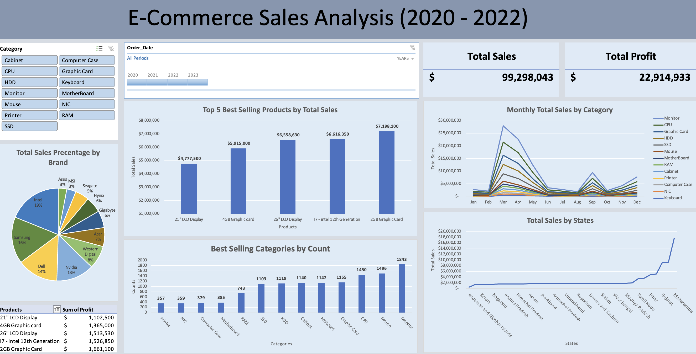

E-Commerce Sales Analysis (Excel)
In this analysis, we will examine key aspects of e-commerce sales data to uncover insights and trends that can inform business strategies and decision-making. The specific questions addressed in this analysis include:
-
What are the top 5 best-selling products?
Identifying the top 5 products with the highest total sales.
-
In what month do specific products experience low sales?
Analyzing monthly sales trends to pinpoint periods of low sales for different products.
-
In what months do specific categories experience the highest and lowest sales?
Analyzing monthly sales trends to pinpoint periods of both highest and lowest sales for different categories.
-
Which states have the highest and lowest sales?
Assessing state-wise sales performance to identify geographic trends and opportunities.
-
Which brand is the most popular?
Evaluating brand popularity by analyzing sales data across different brands.
Excel Source File: Go to Excel
Dataset Source: Kaggle E-commerce Dataset
Final Dashboard
Cleaning the dataset
Step 1: Understand the dataset
The dataset contains 5096 records of sales transactions between 11/01/2020 - 31/12/2022.
There
are 14 columns of
data as below:
-
Order_Number: Unique identifier for each order.
-
State_Code: The code representing the state where the order was placed.
-
Customer_Name: The name of the customer who placed the order.
-
Order_Date: The date when the order was placed.
-
Status: The current status of the order (e.g., Order, Processing, Shipped, Delivered).
-
Product: The name or identifier of the product sold.
-
Category: The category to which the product belongs.
-
Brand: The brand of the product.
-
Cost: The cost incurred by the business to acquire or produce the product.
-
Sales: The revenue earned from selling the product.
-
Quantity: The number of units sold in the order.
-
Total_Cost: The total cost for the quantity sold (Cost * Quantity).
-
Total_Sales: The total revenue for the quantity sold (Sales * Quantity).
-
Assigned Supervisor: The supervisor responsible for the order.
Firstly, I converted the cells into a table by using Cmd + T in Excel.
Step 2: Check for Duplicate Records
After understanding the dataset, I check for any duplicates using Excel's built-in functionality, "Remove Duplicates".
Step 3: Check for Any Blanks or Irregular Values in Records
Using conditional formatting, I highlighted blank cells. Since the highlighted rows were all empty, I deleted them. I didn't find any blank cells or irregular values.
Preparing the dataset
Creating new columns
I extracted the unique state codes from the State_Code column using the UNIQUE formula. Then, I created a new sheet to map state codes to state names. Using VLOOKUP, I added a new column called State_Name.
Next, I created a new column called Month using the TEXT formula on the Order_Date column. I also created a new column called Profit by subtracting the Total Cost from the Total Sales.
Define Metrics for Dashboard
We created the following pivot tables to answer our business questions:
Metric 1: Total Sales
Values: Total Sales (By Sum)
Metric 2: Total Profit
Values: Profit (By Sum)
Metric 3: Top 5 Best Selling Products by Total Sales
Values: Total Sales (By Sum)
Rows: Product
Filter: Top 5 Products
Metric 4: Best Selling Categories by Count
Values: Quantity (By Sum)
Rows: Category
Metric 5: Monthly Total Sales by Category
Values: Total Sales (By Sum)
Rows: Month
Columns: Category
Metric 6: Total Sales by States
Values: Total Sales (By Sum)
Rows: State_Name
Metric 7: Total Sales Percentage by Brand
Values: Total Sales (By Sum)
Rows: Brand
Metric 8: Top 5 Most Profitable Products
Values: Profit (By Sum)
Rows: Product
Creating Charts for Certain Metrics
For Metric 3: Top 5 Best Selling Products by Total Sales
I created a Bar Chart with Products on the x-axis and Total Sales on the y-axis.
For Metric 4: Best Selling Categories by Count
Another Bar Chart with Categories on the x-axis and Counts on the y-axis.
For Metric 5: Monthly Total Sales by Category
A Line Chart with Months on the x-axis and Total Sales on the y-axis.
For Metric 6: Total Sales by States
A Line Chart with States on the x-axis and Total Sales on the y-axis.
For Metric 7: Total Sales Percentage by Brand
A Pie Chart showing the percentage of Total Sales by Brand.
Creating Slicer and Timeline
I created a slicer and timeline to manipulate the data shown in charts. By using these tools, we can gain different insights through filtering.
Analysis From Dashboard
By analyzing the dashboard, we can get an overview of the sales performance across different products, categories, and states. Observing these performances allows us to provide recommendations that will improve overall sales for the e-commerce website.
Analysis 1: Need to Restock Inventory Between March and May and in September
Sales across all product categories tend to increase between March and May, and again in September. It's important to ensure inventory levels are sufficient during these peak periods to meet the higher demand.
Analysis 2: Increase Marketing Efforts in July and August
Sales across all product categories tend to decrease in July and August. We need to run more marketing campaigns during these months, especially for the top-selling products: monitors, CPUs, and graphics cards.
Analysis 3: Lowest and Highest Sales States
The chart shows that Andaman and Nicobar Islands have the lowest sales, while Maharashtra has the highest. Most states have consistent sales, with Gujarat and Uttar Pradesh having the second-highest sales. We should consider conducting surveys to analyze the reasons for low sales in Andaman and Nicobar Islands. For high-performing states, ensure sufficient stock to meet the high demand.